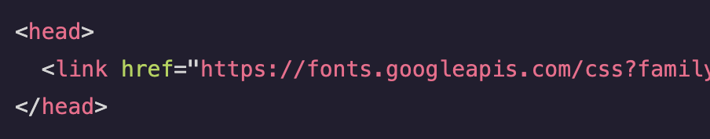

The CSS font-weight property declares how thick or thin should be the characters of a text. Numerical values can be used with this property to set the thickness of the text. The numeric scale range of this property is from 100 to 900 and accepts only multiples of 100. The default value is normal while the default numerical value is 400. Any value less than 400 will have text appear lighter than the default while any numerical value greater than the 400 will appear bolder. In the given example, all the <p> elements will appear in a bolder font.
The CSS font-style property determines the font style in which text will appear. It accepts italic as a value to set the font style to italic.
The CSS @font-face rule allows external fonts or font files to be imported directly into stylesheets.The location of the font file must be specified in the CSS rule so that the files can be loaded from that location. This rule also allows locally hosted fonts to be added using a relative file path instead of a web URL.
The CSS font-family property can have multiple fonts declared in order of preference. In this case the fonts following the initial font are known as the fallback fonts. If the initial value of the property font-family fails to load to the webpage, the fallback fonts will be used.
The CSS line-height property declares the vertical spacing between lines of text. It accepts both unitless numbers as a ratio (eg. 2) and numbers specified by unit as values (eg. 12px) but it does not accept negative numbers. A unitless number is an absolute value that will compute the line height as a ratio to the font size and a unit number can be any valid CSS unit (eg. pixels, percents, ems, rems, etc.). To set the line-height of the <p> elements to 10px, the given CSS declaration can be used.
Linking fonts allow user to use web fonts in the document. They can be imported in an HTML document by using the <link/> tag. Once the web font URL is placed within the href attribute, the imported font can then be used in CSS declaration.
